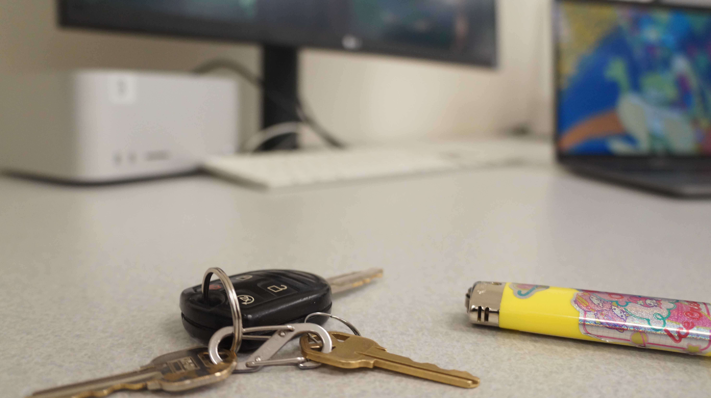
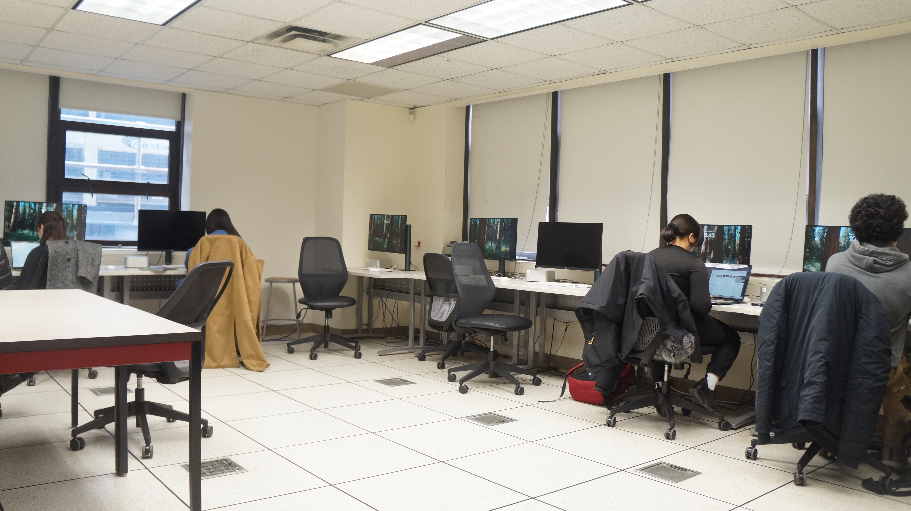
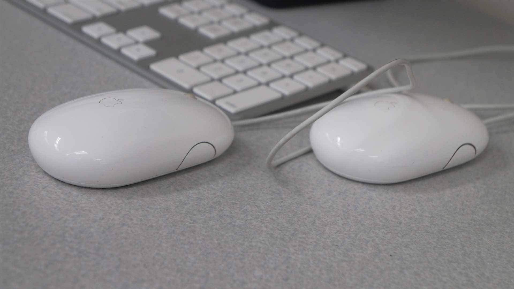
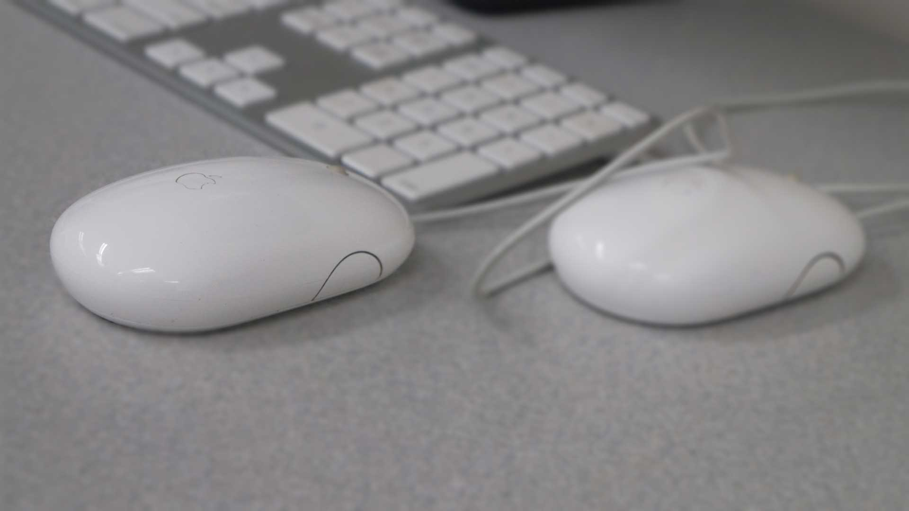

For 'Homework 3', I compiled 4 JPG pics on this page: one shallow depth of field photo, one deep depth of field photo, and a comparison between two photos with and without an artifical blur done on Photoshop.
| shallow dof | deep dof |
|---|---|
|

settings: exposure time 1/80,
|

|
| original | photoshop blur (blur gallery) |
|---|---|
|

original photo
|

edited photo
|
This exercise demonstrated the importance of the light captured by the camera. The lab room’s source of light is concentrated at the middle of the room with a low ceiling, and I took photos to compare the same image at different settings. I increased the shutter speed after initially setting the ISO at 200. When taking photographs with a deep depth of field, I felt that the image was flat with a shortened background, which may correspond to the size of the lab room and the focal length. The photograph I chose for the deep field of depth captured the majority of the front of the class. The cramped corner contrasted with the emptier area taken up by the white projector screen. I focused on the professor’s desk and the space behind it. The professor’s desk can be used to inform about the distance from the background. Even when there was more light in the lab, the photographs from a distance did not capture enough to distinguish darker objects. Not only did I increase the f-stop to 11.0, but I also raised the sensitivity to ISO 800 for brighter images. When editing the picture used for the Photoshop blur, I observed that the histogram was distributed across the dark tones and midtones. In the Camera Raw panel, I moved the highlight adjustment by +1.00 and curve adjustment to slightly increase the highlights. I used the blur gallery field blur filter at 8 px to artificially blur until the Apple logo on the right mouse could not be seen.